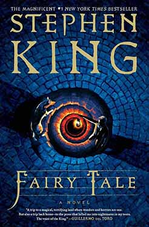
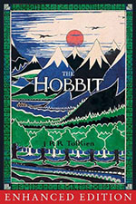

During laber day, our family visited Turkey Run State Park in Indiana. Turkey Run features 11 different hiking trails, and its Trail No. 3 has been named the best hike in the Midwest. We hiked the trails, enjoyed the beautiful scenery. It was a great way to spend quality time together and appreciate nature.
Shapiro’s Delicatessen, established in 1934, is my favorite restaurant in Indiana. Known for its rich history and warm, welcoming atmosphere, it offers an authentic New York–style deli experience right in the Midwest. The food is consistently top-quality, from freshly baked rye bread to house-made pickles, and every bite feels steeped in tradition. Their classic corned beef sandwich, stacked high and perfectly seasoned, is absolutely outstanding and keeps me coming back every time.
My favorite dish at Shapiro’s Delicatessen is the Pastrami Sandwich. It begins with a tender beef navel, slow-smoked with a special blend of secret spices and rub, then sliced hot to order. Each sandwich is piled high with about six ounces of perfectly seasoned pastrami and served on Shapiro’s famous rye bread—or any bread you prefer. The result is a hearty, two-handed meal that’s as satisfying as it is unforgettable.
| Name | Cover | Author | Introduction |
|---|---|---|---|
| Fairy Tale |  | Stephen King | Spellbinding novel about a young man who inherits the keys to a parallel world where good and evil are at war, and the stakes could not be higher—for that world or ours. |
| To Kill a Mockingbird | Harper Lee | Harper Lee's Pulitzer Prize-winning masterwork of honor and injustice in the deep South—and the heroism of one man in the face of blind and violent hatred. | |
| 1984 | George Orwell | A startling and haunting vision of the world, 1984 is so powerful that it is completely convincing from start to finish. No one can deny the novel's hold on the imaginations of whole generations, or the power of its admonitions—a legacy that seems only to grow with the passage of time. | |
| The Hobbit |  | J.R.R. Tolkien | Bilbo Baggins is a hobbit who enjoys a comfortable, unambitious life, rarely traveling any farther than his pantry or cellar. But his contentment is disturbed when the wizard Gandalf and a company of dwarves arrive on his doorstep one day to whisk him away on an adventure. |